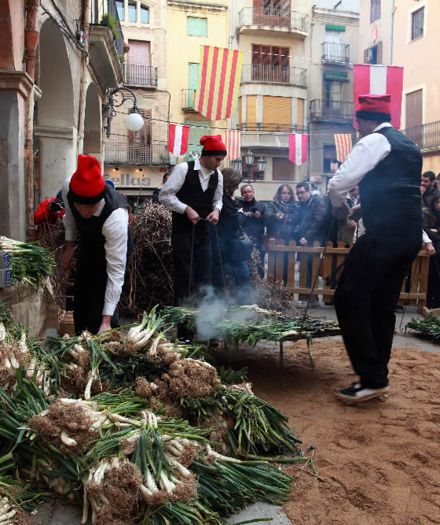
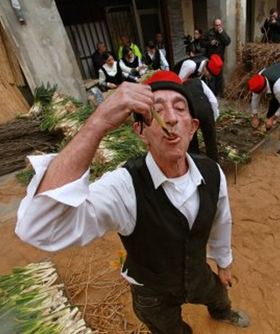

Entramos en materia
Responde y comenta estas preguntas con tus compañero/as:
- ¿Te gustan las verduras? ¿Cuál es tu favorita? ¿Y cuál odias?
- ¿Te gusta cocinar? ¿Eres bueno/a en la cocina?
- ¿Conoces los calçots? ¿Alguna vez los has comido? ¿Te gustó?
- ¿Qué opinas de las tradicionales relacionadas con comida?
- ¿En tu país hay alguna tradición gastronómica muy importante?
- Además de los calçots, ¿conoces otras comidas tradicionales de Cataluña?

Actividad 1: ¿Qué son los calçots?
Mira este video para entender mejor qué son los calçots.
Actividad 2: La tradición de la calçotada
Completa este texto sobre la tradición de la calçotada con el vocabulario proporcionado.
La calçotada es una especialidad culinaria nacida en Valls, Tarragona, que ha sido adoptada por otros muchos restaurantes y lugares de Cataluña hasta convertirse en uno de los que mejor identifican nuestra cultura gastronómica.
Esta tradición gastronómica se ha convertido en un turístico para gente de todos los continentes que se a Valls y a otras villas del Alt Camp para buscar las auténticas de esta especialidad y explorar la oferta de cocina del calçot, que poco a poco se está desarrollando en este del país, donde este producto se convierte en el auténtico protagonista de platos de nueva creación, basados en las tradicionales de la cocina del sur de Cataluña.
El calçot se está haciendo un espacio en la cocina de muchos restaurantes que siguen una filosofía basada en la gastronomía preparada a base de productos naturales, de y de calidad. Además, presentan creativas muy variadas elaboradas a partir de esta cebolla dulce: calçots con bechamel, bacalao con calçots, conejo relleno de calçots y níscalos, calçots con espinacas, ensalada de calçot con alcachofa…
Además de la calçotada, la gastronomía de Valls otros elementos para tener en cuenta, como su aceite de oliva, los vinos tarraconenses, los productos de huerta, o los embutidos.


Actividad 3: Receta secreta
Ordena correctamente los diferentes pasos de la receta de la salsa Romesco y completa sus acciones en forma de Imperativo.
PASOS:
- al mortero los tomates pelados, los ajos sin piel y la pulpa de las ñoras. también el pan tostado si quieres una salsa más espesa.
- la salsa en un cuenco junto a los calçots asados y .
- los tomates y las cabezas de ajo en una bandeja. a 180 ºC durante 20-25 minutos hasta que estén blandos. Cuando estén listos, los tomates y los ajos asados.
- el pimentón, la sal, el vinagre y, si te gusta, un poco de guindilla. bien todos los ingredientes.
- las ñoras en agua caliente y en remojo durante 15-20 minutos. Luego, su pulpa.
- En un mortero, almendras y avellanas tostadas hasta que queden finas.
- Mientras bates, poco a poco el aceite de oliva hasta obtener una textura cremosa y homogénea.
RECETA:
Actividad 4: ¿Cómo se come?
En este video se explica la forma de comer los calçots y otros temas relacionados con la comida española. Después de verlo, responde las preguntas.
Actividad 5: Crea tu verdura
Crea con tus compañeros/as una verdura siguiendo estos pasos:
Reflexión
Responde y comenta estas preguntas con tus compañero/as:
- ¿Te gustaría participar en una calçotada?
- ¿Qué opinas del ritual de comer calçots con las manos y ensuciarse un poco?
- ¿Qué crees que hace que la calçotada sea tan especial comparada con otras comidas al aire libre?
- ¿Crees que es importante mantener vivas estas tradiciones?
- ¿Crees que la calçotada debería celebrarse fuera de Cataluña?